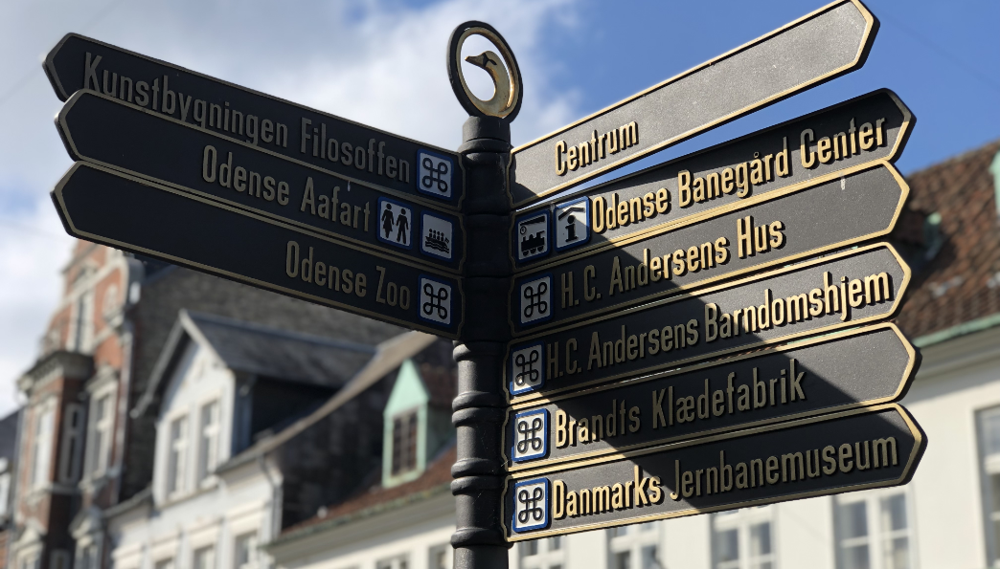
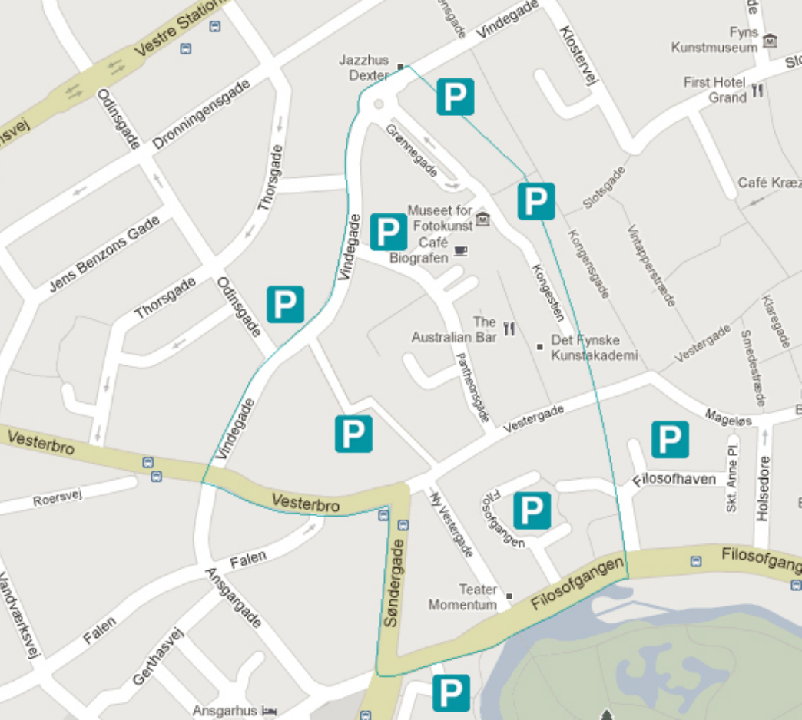

Et område fyldt med atmosfære og oplevelser
Odenses Latinerkvarter emmer af god atmosfære, rustikke indtryk, oplevelser og liv

Odenses Latinerkvarter er indbegrebet af det kreative og det skæve miljø samlet under åben himmel i hjertet af Odense City.
Området er fyldt af atmosfære og forener det traditionsbundne og det moderne i en harmonisk helhed.
Det betyder at du kan opleve sprudlende byliv med caféer, livsstilsbutikker
og mode, blandet med kunst, kultur og ikke mindst natur lige om
hjørnet.
Odenses Latinerkvarter emmer af god atmosfære, rustikke indtryk, gode oplevelser og liv i gaderne.

Latinerkvarteret strækker sig fra området omkring Brandts Klædefabrik og forgrener sig ud i Vestergade, begyndelsen af Vesterbro, Søndergade og Ny Vestergade for at munde ud i Munke Mose. Parken byder på mulighed for afslapning, evt. med en god flaske vin fra H. J. Hansen Vin, mens den yngre generation har mulighed for leg i de naturskønne omgivelser. Med andre ord: Latinerkvarteret i Odense byder på det bedste til en hyggelig dag i byen.